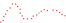
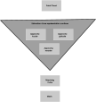

Reconstruction 3D
La dernière fois,
nous avons répondu
à une première question.
Comment fusionner
plusieurs scans ?
Grâce au recalage,
tous les scans
sont maintenant
dans le même repère.
Mission accomplie ?
Pas tout à fait…
Nous avons seulement
un nuage de points
plus gros.
Sans connectivité
Sans faces
Sans surface
Juste des points.
Des millions de points.
La surface
n’est présente
nulle part
dans les données.
Elle doit être…
inférée.
Oui mais…
Pourquoi ne pas simplement
trianguler ?
🤔
Et encore, là c’est un nuage de points idéal
Mais alors…
Comment
reconstruire une surface
à partir de
simples points ?
Bloc 1
Un nuage de points
n’est finalement
qu’un ensemble
d’échantillons.
Mais…
une surface existe peut être entre les points.

Le problème est
encore plus difficile
que le recalage.
Pourquoi ?
Parce qu’il existe
une infinité de surfaces
compatibles
avec les mêmes points.
Laquelle choisir ?

Nous devons retrouver
la surface
la plus probable.
Cette étape possède
un nom.
Surface Reconstruction
Depuis plus de
30 ans
des dizaines de méthodes
ont été proposées.
Mais…
elles suivent presque toutes
le même pipeline.
Bloc 2
Nous cherchons
à reconstruire
une surface.
Mais…
avec quelles informations ?
🧐
À première vue,
nous ne possédons
qu’une seule information.
La position
des points.
Pourtant…
un nuage ☁️ de points
contient bien plus
que de simples
coordonnées.
Certaines informations
sont directement mesurées.
- Position 3D
- Couleur
- Intensité
- Position du capteur
- Direction du rayon
À partir
de ces mesures,
nous pouvons
calculer
de nouvelles informations.
😃
Tout commence
par définir
un voisinage.

Ce voisinage
révèle déjà la
géométrie locale.
Par exemple,
on peut estimer
une normale.

Pour cela,
on réalise souvent
une
PCA
(Principale Component Analysis)
La PCA
fournit
trois directions
principales.
Les valeurs propres décrivent
la répartition des points.
\(\lambda_1 \gg \lambda_2 \approx \lambda_3\) Ligne
\(\lambda_1 \approx \lambda_2 \gg \lambda_3\) Surface
\(\lambda_1 \approx \lambda_2 \approx \lambda_3\) Volume
La normale
correspond
au vecteur propre
associé
à la plus petite
valeur propre.
Et avec quelle taille de voisinage ?

Mais la normale
n’est pas
la seule information
que l’on peut estimer.
À partir du voisinage,
on peut aussi estimer
- Courbure
- Densité locale
- Directions principales
- Graphe de voisinage
- Confiance locale
Certaines informations proviennent aussi
du processus d’acquisition.
- Distance au capteur
- Angle d’incidence
- Nombre d’observations
La reconstruction
ne consiste donc pas
à relier
des points.
Elle consiste
à exploiter toute
l’information contenue
dans le nuage.
Chaque méthode actuelle
utilise une combinaison
de ces informations
pour retrouver
la surface la plus probable.

Mais globalement
c’est toujours
le même pipeline
Bloc 3
Nous avons maintenant
de nombreuses informations
sur le nuage.
Mais…
comment retrouver
la surface ?
Une idée
s’est imposée
progressivement.
Construire
une représentation continue
de la scène.
Autrement dit,
définir
une fonction
dans tout l’espace.
La surface
correspond alors
aux points
où
\(f(x)=0\)
Toute la difficulté
est maintenant
de construire
cette fonction.
Première
approche
On construit localement (1992)
Première approche
historique et intuitive :
Construire
la fonction
localement.
Hoppe (1992)
Chaque voisinage définit
une approximation locale
de la fonction.
Deuxième
approche
On construit globalement (2006)
Construire
une fonction
globale.
Toutes les observations
contribuent
simultanément
à une même
fonction.
Poisson Reconstruction (2006)
Ici, l’ensemble des normales
est pris en compte
pour obtenir un espace fermé
(watertight)
Troisième
approche
On ne construit plus explicitement la fonction, on l’apprend (2020+)
Apprendre
directement
la fonction.
Neural SDF
Neuralangelo
La fonction
n’est plus
définie
par des règles,
mais apprise
à partir
des données.
Quelle que soit
la méthode,
on obtient
une fonction implicite.
Il reste alors
une dernière étape.
Extraire
la surface.
Marching Cubes
Marching Cube date un peu (1987)
Mais reste, avec ses dérivé,
la méthode largement utilisée aujourd’hui

Malgré leurs différences,
toutes ces méthodes
répondent
à la même question.
Quelle est
la surface
la plus probable ?
Bloc 4
Alors…
Quelle méthode
est la meilleure ?
La réponse est
Aucune.
Chaque méthode
repose sur
des hypothèses
différentes.
Selon les données,
certaines méthodes
seront
plus adaptées
que d’autres.
Par exemple…
- bruit
- trous
- densité variable
- détails fins
- très grandes scènes
Le choix dépend aussi
de l’application.
Visualisation
Impression 3D
Simulation
Métrologie
Temps réel
En pratique,
les pipelines modernes
combinent souvent
plusieurs méthodes.
Prétraitement
Reconstruction
Nettoyage
Simplification
La reconstruction
n’est finalement
qu’une étape
du pipeline 3D.
La question suivante
est alors
tout aussi importante.
Que peut-on faire
une fois
la surface reconstruite ?
Comprendre
la géométrie.
Segmentation
Analyse
Interprétation
Conclusion
Aujourd’hui,
nous avons répondu
à une nouvelle question.
Comment retrouver
une surface à partir
d’un nuage de points ?
Nous avons vu que
la reconstruction
est un problème
d’inférence.
La surface
n’est jamais
observée directement.
Les différentes méthodes
reposent sur
des hypothèses
différentes.
Locale
Globale
Volumique
Apprenante
Il n’existe
pas de méthode
universelle.
Le choix dépend
des données
et de l’application.
Nous savons maintenant
reconstruire
une géométrie.
Mais…
comment lui donner
du sens ?
Au prochain cours :
Segmentation
Compréhension de scènes 3D
C’est tout pour aujourd’hui